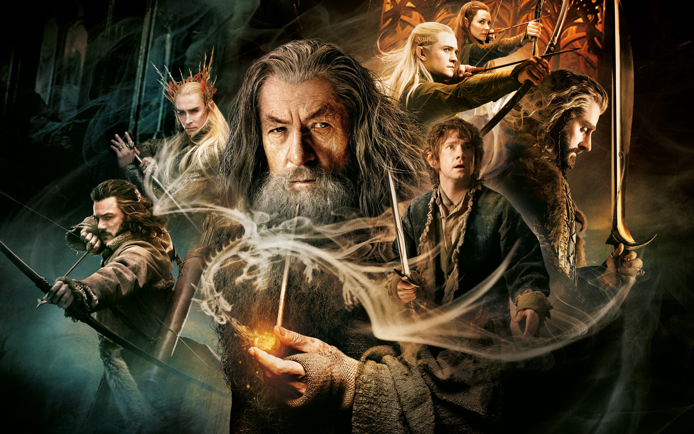
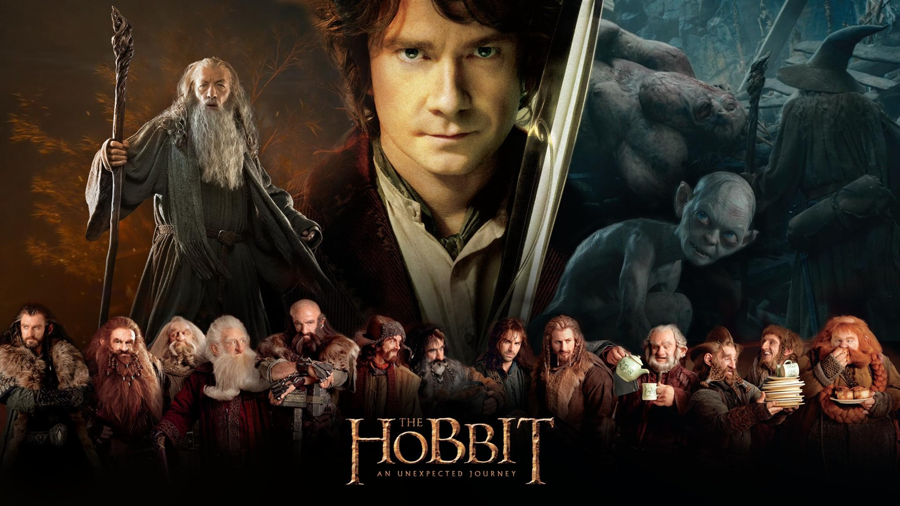

|
|
HOBBİTYüzüklerin Efendisi Tolkien'in yazdığı fantastik bir romandır. Hikâye, Tolkien'in çocuklar için yazdığı 1937 tarihli Hobbit'in devamı olarak başlamıştı ancak sonunda ondan çok daha büyük bir eser haline geldi. Çoğu II. Dünya Savaşı'nda olmak üzere 1937 ve 1949 yılları arasında aşamalar halinde yazıldı. 150 milyonun üstündeki satış sayısıyla tüm zamanların en çok satan ikinci romanıdır. Roman adını Orta Dünya’yı fethederek yüzüklere hükmeden hikayenin baş kötü adamı Karanlıklar ülkesinin Lordu, Lord Sauron’dan almaktadır. Hobbit, Tolkien’in Yüzüklerin Efendisi adlı roman serisine de ilham olan ve bu serinin başlangıcını oluşturan bir romandır. Hobbit ilk kez 21 Eylül 1937 tarihinde basılmıştır. Tolkien bu romanı çocuklar için yazmış olsa da roman yetişkinler tarafında da oldukça ilgi gördü. Son yıllarda romanın filme de uyarlanması üzerine roman ve filmi tüm zamanların en çok bilinen ve adı duyulan olmuş hem roman hem de filmi oldukça popüler olmuştur. Hobbit romanı ve filmi yazarın bu romana devam niteliğinde yazdığı Yüzüklerin Efendisi üçlemesi ile birlikte inanılmaz bir başarı yakalamış, filmleri onlarca milyon kişi tarafından izlenmiş, The Hobbit ile devamı olan Yüzüklerin Efendisi serileri yüzlerce milyon kopya satmış tüm dünya da en ünlü romanlardan ve filmlerden birisi olmuştur. Hobbitler çok kısa boylu, güzel yüzlü, sevimli, toprakları oyulmuş evlerinde mutlu ve huzurlu yaşayan insanlardır. Yemeye, içmeye ve eğlenmeye düşkün bu küçük insanlar doğal güzellikler ve yemyeşil bir doğanın koynunda sakin bir hayat sürmektedir. Evleri temiz ve konforlu yiyeceklerle doludur.Günün birinde başkarakter Bilbo Baggins’i büyük büyücü Gandalf ve 13 cüce ziyaret ediyor. Hazinelerini ejderha Smaug’dan geri almak için Bilbo’dan yardım istiyorlar ve ona hazineden 14’te 1 pay teklif ediyorlar. Bilbo, epey korkmasına rağmen bu maceraya katılmayı kabul ediyor. Maceracılar sisli, gizemli ve derin vadiler içinden yol alırlarken Bilbo Baggins kendi yeteneklerinin, gizemli güçlerinin ve cesaretinin farkına varmaya başlamıştı. Yola devam ederken ormanın derinliklerinde yaşayan Troller karşılarına çıktı ve Hobbitler esir düştü. Onlara yetişen Gandalf şafak söktüğünde asası sayesinde Troller’i taşa döndürdü. Büyücü, hobbit ve cüceler trollerinin mağarasında bazı silahlar, yelekler ve kılıçlar da alarak yollarına devam ettiler. Tekrar tola koyulup yemyeşil çayırları ve ormanları olan Ayrıkvadi Elrond’un evine geldiler. Burada dinlenip tekrar yola çıktılar. Fakat Hobbitlerin yaşadığı Orta Dünya’nın yakınlarında Orta Dünya’yı ele geçirmek isteyen Orglar ile karşılaştılar.. Gandalf onları Orglardan da kurtardı. Daha sonra her yanı uçurumlarla dolu olan dağlık bir yere geldiler ve bu dağların içinde gizemli bir mağaraya vardılar. Girdikleri bu mağarada Goblinler yaşıyordu. Goblinler onları yakalamış ve kafile onlara tutsak olmuştu. Gandalf ve asası onları Goblinlerden kurtarmış ama Bilbo dengesini kaybedip mağaranın içindeki bir uçurumdan aşağı yuvarlanmıştı. Bilbo düştüğü yerde iri gözlü cüce ve acayip bir yaratık olan Gollum ile karşılaştı. Gollum ile Bilbo bir bilmece oyunu oynamış Bilbo bu oyunda Gollum’u yenmiş bu arada bir yüzük bulmuş ve bu yüzüğü hiç kimseye sezdirmeden üzerinde saklamıştı. Bu yüzük Orta Dünya’nın kaderini değiştirecek olan yüzüktü. Bilbo bu yüzük sayesinde Goblinlerin arasından geçerek ellerinden kurtulmuştu. Bu yüzüğü parmağına takan görünmez oluyordu. Goblinlerden de kurtulan kafileye bu defa Warglar saldırmış ama Gandalf’ın asası sayesinde yetişen kartallar onları Warglardan kurtarmıştı. Kafile bir ovada tek başına yaşan Beorn’a ulaşmış ve ona misafir olmuşlardı. Beoron onları iyi karşılamış, onlara erzak vererek yolculukları için tavsiyeler de yapmıştı. Önlerine çıkan ürkütücü bir ormandan geçerleyken onların karşısına devasa örümcekler çıkmıştı. Örümcekler hepsini teker teker yakalamış onları koza yapmıştı. Fakat Bilbo sihirli yüzüğün sayesinde onları örümceklerden kurtardı. Kafile Elflerinin yaşadığı muhteşem bir ülkeye erişmişti. Fakat Elfler ile Hobbitler anlaşmayınca Elfler onları hapse atmıştı. Fakat yine Bilbo devreye girmiş ve Hobbitleri kurtarmıştı. Elflerin ülkesinden ayrılan kafile fıçılara binerek ve nehri takip ederek yola koyulmuşlardı. Burada orglar onlara saldırdı ama kafile Orglardan kurtulmuştu. En sonunda aradıkları dağın girişine ve dağın kapısına kafile ulaşmış oldu. Kapının açılması için gereken anahtar günün son ışıkları kapıya vurduğunda kapının deliği görülünce işe yarayacaktı. Sonunda anahtar deliği bulunmuş ve kapı açılmıştı. Bu kapının açtığı dağın içinde muazzam bir define ve bu defineyi koruyan o büyük ejderha vardı. Üstelik burada hazineden bile daha değerli olan bir taş da bulunuyordu. O taşı bulan büyük bir güce kavuşuyordu. Bunu bilen Bilbo Baggins taşı bulmak için aşağıya inmişti. Baggins adı Arkentaşı olan bu taşı bulmuş ama uyuyan ejderhayı da uyandırmıştı. Ejderha saldırmaya başlayınca Göl halkı da Hobbitlere yardım etmiş köye saldıran Ejderha özel bir okla zayıf noktasından cesur biri tarafından vurularak öldürülür. Böylece cüce kenti Erebor’un kurtulmuştur. Fakat dağın savunmasız kaldığını duyan ırklar dağdaki definelere sahip olmak için saldırıya geçmişti. Her ordu diğerini yenerek dağdaki defineye sahip olmak istiyordu. Üstelik bu dağı ele geçiren Orta Dünya’ya da hükmetmek imkânına kavuşacaktı. Bu nedenle Elfler, Göl Halkı ve Hobbitler bu dağı korumak için toplanmaya başlamıştı. Sonunda büyük bir savaş olmuş, dağı koruyan Hobbitler, Cüceler, Elfler ve Göl Halkı savaşı kazanmıştı.Küçük Hobbit Bilbo artık zengin, evine geri dönüyor, huzurlu bir yaşam sürüyor ve her şeyi güzelce yazmaya başlı. |
|||||